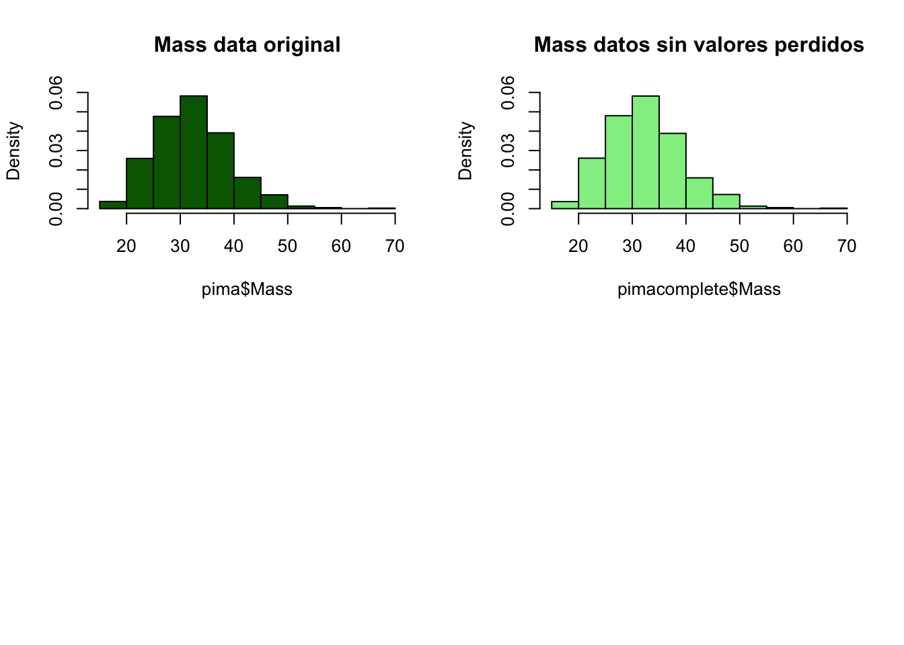

Exploración de Datos
joseangeldiazg
18/12/2017
1. Introducción.
La práctica final de la asignatura Introducción a la Ciencia de Datos, requiere de:
- Aplicación de técnicas de estadística descriptiva y análisis exploratorio de datos sobre los datasets que se estudiarán en los puntos siguientes.
- Estudio de técnicas de clasificación sobre un dataset específico para clasificación.
- Estudio de técnicas de regresión sobre un dataset específico para regresión.
En esta primera parte, nos centraremos en el primer punto. Para ello, lo primero que debemos hacer es conocer los datasets, para saber que tipo de datos manejamos y a que contexto o problema real pertenecen.
Pima
Los datos de este dataset, corresponden a datos de pacientes proporcionados por el Instituto Nacional de Diabetes, su objetivo, es predecir cuando un paciente tendrá o no diabetes en función de ciertas medidas de diagnóstico.
AutoMPG8
Es un dataset usado en problemas regresión. En los que el objetivo está en predecir MPG, galones por milla, consumidos por los coches en función de ciertos parámetros. Como su velocidad, peso, aceleración…
2. Lectura de los datasets
Los datasets ofrecidos en la web de la asignatura están en formato Keel, por lo que antes de proceder a trabajar con ellos deberemos cargarlos en Rstudio. Para ello, procederemos como sigue:
pima <- read.csv("../datasets/DatasetsClasificacion/pima/pima.dat", comment.char="@")
autompg8 <- read.csv("../datasets/DatasetsRegresion/autoMPG8/autoMPG8.dat", comment.char="@")Con esto hemos leido los datos, pero tenemos que asignarles nombres a las columnas, ya que por defecto estás no vienen en formato entendible por read.csv, por lo que lo haremos de manera manual.
names(autompg8) <- c("Cylinders", "Displacement", "Horse_power","Weight","Acceleration", "Model_year", "Origin", "Mpg")
names(pima)<-c("Preg", "Plas", "Pres", "Skin", "Insu", "Mass", "Pedi", "Age", "Class")Una vez hecho esto podemos ver el contenido de los datasets, usando la función head.
head(autompg8)## Cylinders Displacement Horse_power Weight Acceleration Model_year Origin
## 1 6 155 107 2472 14.0 73 1
## 2 4 91 68 2025 18.2 82 3
## 3 4 135 84 2370 13.0 82 1
## 4 6 258 95 3193 17.8 76 1
## 5 5 183 77 3530 20.1 79 2
## 6 4 119 97 2300 14.7 78 3
## Mpg
## 1 21.0
## 2 37.0
## 3 36.0
## 4 17.5
## 5 25.4
## 6 27.2head(pima)## Preg Plas Pres Skin Insu Mass Pedi Age Class
## 1 4 146 78 0 0 38.5 0.520 67 tested_positive
## 2 15 136 70 32 110 37.1 0.153 43 tested_positive
## 3 3 107 62 13 48 22.9 0.678 23 tested_positive
## 4 3 169 74 19 125 29.9 0.268 31 tested_positive
## 5 5 116 74 29 0 32.3 0.660 35 tested_positive
## 6 6 0 68 41 0 39.0 0.727 41 tested_positive3. Exploración del dataset Pima
El primer paso para enfrentarnos a un dataset, será comprender qué es cada una de las variables. En este caso tendremos que usar fuentes de información externas ya que no es fácil de intuir. Tras diversas búsquedas por internet podemos concluir que todo el dataset corresponde a mujeres y las características representan:
Preg: Número de embarazos. Plas: Concentración de plasma de glucosa. Pres: Presión arterial. Skin: Espesor de la piel en el triceps en mm. Insu: Insulina. Mass: Índice de masa corporal. Pedi: Función Pedigree de la Diabetes, mide el componente hereditario. Age: Edad de la paciente. Class: Salida, nos dice si tiene o no diabetes.
Una vez conlcuida nuestra investigación podemos centrarnos en los datos “técnicos” del dataset, es decir, frente a que tipos de datos nos encontramos, dimensiones, distribuciones…
3.1 Descripción de los datos de entrada del dataset Pima.
Para obtener información sobre el dataset, podemos usar el comando str que nos ofrece esta en un formato bastante útil.
str(pima)## 'data.frame': 767 obs. of 9 variables:
## $ Preg : int 4 15 3 3 5 6 3 3 4 4 ...
## $ Plas : int 146 136 107 169 116 0 173 162 146 171 ...
## $ Pres : int 78 70 62 74 74 68 78 52 92 72 ...
## $ Skin : int 0 32 13 19 29 41 39 38 0 0 ...
## $ Insu : int 0 110 48 125 0 0 185 0 0 0 ...
## $ Mass : num 38.5 37.1 22.9 29.9 32.3 39 33.8 37.2 31.2 43.6 ...
## $ Pedi : num 0.52 0.153 0.678 0.268 0.66 0.727 0.97 0.652 0.539 0.479 ...
## $ Age : int 67 43 23 31 35 41 31 24 61 26 ...
## $ Class: Factor w/ 2 levels "tested_negative",..: 2 2 2 2 2 2 2 2 2 2 ...En base a la salida, podemos comprobar que estamos ante un dataframe con 767 observaciones y 9 variables, 8 de ellas son independientes, y una dependiente, Classs, que es un factor con dos niveles. Las variables independientes son de tipo numérico tanto enteros como valores de tipo double.
Con este simple comando, ya podemos darnos cuenta de un factor importante, y es que tenemos errores o valores perdidos en nuestro dataset. Esto es muy claro ya que una persona no puede tener valor 0 en el grosor de la piel, o en insulina. Deberemos estudiar esto con detalle en puntos siguientes, ya que si no lo hacemos y los tomamos como valores a tener en cuenta en el proceso de aprendizaje y harán que nuestro modelo clasifique muy mal ante muestras en test.
Por otro lado, vamos a comprobar la distribución de la clase, para ello, haremos uso del comando table, y de un gráfico de barras para verlo gráficamente.
barplot(table(pima$Class))
En base al gráfico podemos concluir que tenemos un problema no balanceado, es decir, con mayor número de representación de una clase que de la otra, por lo que podremos tener en nuestro proceso de clasificación cierto sesgo hacía la clase mayoritaria, en este caso, tested_negative.
3.2 Calculo de las medidas estadísticas básicas.
Las medidas estadísticas básicas pueden ser útiles para el proceso de decripción del dataset. Y pueden calcularse fácilmente con funciones como mean(), median(), IQR()… aunque hay paquetes y funciones que nos facilitan esta labor y nos ofrecen más información como summary() o describe().
Usaremos estas, pero antes, pasaremos nuestros valores categorizados como 0 a NA, es decir, valor perdido para que R sepa como tratarlos, debemos tener cuidado en la variable Preg, ya que aquí el 0 no es un valor perdido, sino que indica que la paciente nunca ha estado embarazada.
pima[pima==0] <- NA
pima$Preg<-ifelse(is.na(pima$Preg),0,pima$Preg)
summary(pima)## Preg Plas Pres Skin
## Min. : 0.000 Min. : 44.0 Min. : 24.00 Min. : 7.00
## 1st Qu.: 1.000 1st Qu.: 99.0 1st Qu.: 64.00 1st Qu.:22.00
## Median : 3.000 Median :117.0 Median : 72.00 Median :29.00
## Mean : 3.832 Mean :121.6 Mean : 72.42 Mean :29.15
## 3rd Qu.: 6.000 3rd Qu.:140.8 3rd Qu.: 80.00 3rd Qu.:36.00
## Max. :17.000 Max. :199.0 Max. :122.00 Max. :99.00
## NA's :5 NA's :35 NA's :227
## Insu Mass Pedi Age
## Min. : 14.00 Min. :18.20 Min. :0.0780 Min. :21.00
## 1st Qu.: 76.25 1st Qu.:27.50 1st Qu.:0.2440 1st Qu.:24.00
## Median :125.00 Median :32.30 Median :0.3740 Median :29.00
## Mean :155.55 Mean :32.46 Mean :0.4722 Mean :33.23
## 3rd Qu.:190.00 3rd Qu.:36.60 3rd Qu.:0.6265 3rd Qu.:41.00
## Max. :846.00 Max. :67.10 Max. :2.4200 Max. :81.00
## NA's :373 NA's :11
## Class
## tested_negative:500
## tested_positive:267
##
##
##
##
## Podemos ver como la distribuciones de las medidas de dispersión de las variables exceptuando algunas están en rangos similares,lo que nos facilitará la representación y estudio de las mismas gráficamente, aunque quizá igualmente necesitemos normalizar los datos, ya que hay picos muy altos por arriba en bastantes variables como en Pedi o en Insu, donde además, tenemos un número tal de valores perdidos que necesitará probablemente ser imputado o predicho con algun método de regresión.
Por último usaremos la función describe del paquete Hmisc, para ver si podemos obtener más información.
library (Hmisc)
describe(pima)## pima
##
## 9 Variables 767 Observations
## ---------------------------------------------------------------------------
## Preg
## n missing distinct Info Mean Gmd .05 .10
## 767 0 17 0.986 3.832 3.681 0 0
## .25 .50 .75 .90 .95
## 1 3 6 9 10
##
## Value 0 1 2 3 4 5 6 7 8 9
## Frequency 111 135 103 75 68 57 50 45 38 28
## Proportion 0.145 0.176 0.134 0.098 0.089 0.074 0.065 0.059 0.050 0.037
##
## Value 10 11 12 13 14 15 17
## Frequency 24 11 9 10 1 1 1
## Proportion 0.031 0.014 0.012 0.013 0.001 0.001 0.001
## ---------------------------------------------------------------------------
## Plas
## n missing distinct Info Mean Gmd .05 .10
## 762 5 135 1 121.6 34.29 80.0 86.1
## .25 .50 .75 .90 .95
## 99.0 117.0 140.8 167.0 181.0
##
## lowest : 44 56 57 61 62, highest: 195 196 197 198 199
## ---------------------------------------------------------------------------
## Pres
## n missing distinct Info Mean Gmd .05 .10
## 732 35 46 0.997 72.42 13.73 52 58
## .25 .50 .75 .90 .95
## 64 72 80 88 92
##
## lowest : 24 30 38 40 44, highest: 106 108 110 114 122
## ---------------------------------------------------------------------------
## Skin
## n missing distinct Info Mean Gmd .05 .10
## 540 227 50 0.999 29.15 11.66 13 16
## .25 .50 .75 .90 .95
## 22 29 36 42 46
##
## lowest : 7 8 10 11 12, highest: 54 56 60 63 99
## ---------------------------------------------------------------------------
## Insu
## n missing distinct Info Mean Gmd .05 .10
## 394 373 185 1 155.5 116.3 41.65 50.30
## .25 .50 .75 .90 .95
## 76.25 125.00 190.00 292.40 395.50
##
## lowest : 14 15 16 18 22, highest: 579 600 680 744 846
## ---------------------------------------------------------------------------
## Mass
## n missing distinct Info Mean Gmd .05 .10
## 756 11 247 1 32.46 7.736 22.20 24.00
## .25 .50 .75 .90 .95
## 27.50 32.30 36.60 41.65 44.50
##
## lowest : 18.2 18.4 19.1 19.3 19.4, highest: 53.2 55.0 57.3 59.4 67.1
## ---------------------------------------------------------------------------
## Pedi
## n missing distinct Info Mean Gmd .05 .10
## 767 0 517 1 0.4722 0.336 0.1403 0.1650
## .25 .50 .75 .90 .95
## 0.2440 0.3740 0.6265 0.8788 1.1333
##
## lowest : 0.078 0.084 0.085 0.088 0.089, highest: 1.893 2.137 2.288 2.329 2.420
## ---------------------------------------------------------------------------
## Age
## n missing distinct Info Mean Gmd .05 .10
## 767 0 52 0.998 33.23 12.63 21 22
## .25 .50 .75 .90 .95
## 24 29 41 51 58
##
## lowest : 21 22 23 24 25, highest: 68 69 70 72 81
## ---------------------------------------------------------------------------
## Class
## n missing distinct
## 767 0 2
##
## Value tested_negative tested_positive
## Frequency 500 267
## Proportion 0.652 0.348
## ---------------------------------------------------------------------------3.3 Visualización del dataset Pima.
Una vez llegados a este punto, ya tenemos bastante información sobre los datos con los que estamos trabajando. Pero, intentaremos ir un poco más allá en el análisis del mismo con ciertos gráficos.
Lo primero será aplicar un scatter plot con el que podremos ver si existen correlaciones entre las variables.
pairs(~.,data=pima, main="Scatterplot")Parece ser que no hay correlaciones entre las variables, exceptuando Skin y Mass que parecen estár correlacionadas, algo que es obvio y trivial pues en la mayoría de los casos más masa corporal indicará un mayor grosor de la piel en los puntos de medida.
Dado que tenemos valores perdidos, usaremos histogramas sobre las variables, además de para hacernos una idea visual de su distribución, para tenerla en cuenta en el punto de imputación de valores perdidos y chequear que esta distribución actual, no se pierde al imputar estos.
par(mfrow = c(2, 2))
hist(pima$Preg)
hist(pima$Plas)
hist(pima$Pres)
hist(pima$Skin)par(mfrow = c(2, 2))
hist(pima$Insu)
hist(pima$Mass)
hist(pima$Pedi)
hist(pima$Age)En base a lo anterior, podemos concluir que las variables están distribuidas normalmente en su mayoría, y solo en ciertas variables como Preg o Age, encontramos distribuciones distintas, algo obvio, al menos en esta variable ya que las edades de las personas en una muestra real no estarán distribuidads normalmente, idem para el número de embarazos. La insulina tampoco está distribuida normalmente y esto si que puede ser un factor a estudiar.
3.4 Preprocesado de datos.
En este punto trataremos de modificar los datos para obtener mejores resultados o al menos un dataset de mejor calidad para poder pasar a aplicar los algoritmos de clasificación siguientes.
Datos unificados
Todos los datos son de tipo entero, por lo que la clase en tipo string puede complicarnos las cosas o dar algun error futuro. Como estámos en un problema binario, lo sustituiremos por 1 o 0.
pima$Class<-ifelse(pima$Class=="tested_positive",1,0)Valores perdidos:
El dataset tiene muchos valores perdios. Una posible solución pasaría por eliminar las muestras con estos valores, aunque esto probablemente intensifique en ratio de desbalanceo del problema.
pimacopy<-pima
for (i in 2:6) {
pimacopy <- pimacopy[-which(is.na(pimacopy[, i])), ]
}
pimacopy## Preg Plas Pres Skin Insu Mass Pedi Age Class
## 2 15 136 70 32 110 37.1 0.153 43 1
## 3 3 107 62 13 48 22.9 0.678 23 1
## 4 3 169 74 19 125 29.9 0.268 31 1
## 7 3 173 78 39 185 33.8 0.970 31 1
## 11 2 155 52 27 540 38.7 0.240 25 1
## 12 9 145 80 46 130 37.9 0.637 40 1
## 15 9 112 82 32 175 34.2 0.260 36 1
## 17 1 144 82 46 180 46.1 0.335 46 1
## 19 5 109 62 41 129 35.8 0.514 25 1
## 21 2 102 86 36 120 45.5 0.127 23 1
## 22 8 167 106 46 231 37.6 0.165 43 1
## 23 6 119 50 22 176 27.1 1.318 33 1
## 24 12 92 62 7 258 27.6 0.926 44 1
## 25 3 129 92 49 155 36.4 0.968 32 1
## 27 1 100 66 29 196 32.0 0.444 42 0
## 28 5 96 74 18 67 33.6 0.997 43 0
## 29 2 127 58 24 275 27.7 1.600 25 0
## 30 7 133 88 15 155 32.4 0.262 37 0
## 31 2 108 52 26 63 32.5 0.318 22 0
## 33 3 84 68 30 106 31.9 0.591 25 0
## 34 0 84 64 22 66 35.8 0.545 21 0
## 36 1 164 82 43 67 32.8 0.341 50 0
## 37 1 153 82 42 485 40.6 0.687 23 0
## 40 2 112 68 22 94 34.1 0.315 26 0
## 44 6 154 78 41 140 46.1 0.571 27 0
## 45 6 93 50 30 64 28.7 0.356 23 0
## 47 5 126 78 27 22 29.6 0.439 40 0
## 51 6 125 68 30 120 30.0 0.464 32 0
## 54 0 74 52 10 36 27.8 0.269 22 0
## 60 5 77 82 41 42 35.8 0.156 35 0
## 63 1 100 66 15 56 23.6 0.666 26 0
## 67 2 83 66 23 50 32.2 0.497 22 0
## 68 1 92 62 25 41 19.5 0.482 25 0
## 69 1 88 62 24 44 29.9 0.422 23 0
## 73 7 83 78 26 71 29.3 0.767 36 0
## 74 5 108 72 43 75 36.1 0.263 33 0
## 76 2 155 74 17 96 26.6 0.433 27 1
## 80 3 173 82 48 465 38.4 2.137 25 1
## 82 1 122 90 51 220 49.7 0.325 31 1
## 83 3 80 82 31 70 34.2 1.292 27 1
## 86 0 188 82 14 185 32.0 0.682 22 1
## 90 0 198 66 32 274 41.3 0.502 28 1
## 92 2 93 64 32 160 38.0 0.674 23 1
## 95 4 184 78 39 277 37.0 0.264 31 1
## 96 9 152 78 34 171 34.2 0.893 33 1
## 97 9 171 110 24 240 45.4 0.721 54 1
## 103 3 130 78 23 79 28.4 0.323 34 1
## 105 0 120 74 18 63 30.5 0.285 26 0
## 107 1 95 60 18 58 23.9 0.260 22 0
## 108 4 129 60 12 231 27.5 0.527 31 0
## 109 1 119 54 13 50 22.3 0.205 24 0
## 110 4 90 88 47 54 37.7 0.362 29 0
## 111 0 84 82 31 125 38.2 0.233 23 0
## 115 6 105 70 32 68 30.8 0.122 37 0
## 116 2 105 58 40 94 34.9 0.225 25 0
## 117 9 123 70 44 94 33.1 0.374 40 0
## 118 5 123 74 40 77 34.1 0.269 28 0
## 119 0 127 80 37 210 36.3 0.804 23 0
## 121 2 108 62 32 56 25.2 0.128 21 0
## 122 1 90 62 18 59 25.1 1.268 25 0
## 123 4 110 76 20 100 28.4 0.118 27 0
## 124 2 108 62 10 278 25.3 0.881 22 0
## 126 1 109 58 18 116 28.5 0.219 22 0
## 127 1 157 72 21 168 25.6 0.123 24 0
## 129 7 114 76 17 110 23.8 0.466 31 0
## 131 0 117 80 31 53 45.2 0.089 24 0
## 133 0 102 78 40 90 34.5 0.238 24 0
## 137 1 101 50 15 36 24.2 0.526 26 0
## 140 3 83 58 31 18 34.3 0.336 25 0
## 141 1 97 64 19 82 18.2 0.299 21 0
## 144 6 154 74 32 193 29.3 0.839 39 0
## 145 1 79 80 25 37 25.4 0.583 22 0
## 146 1 89 76 34 37 31.2 0.192 23 0
## 149 2 96 68 13 49 21.1 0.647 26 0
## 150 0 95 80 45 92 36.5 0.330 26 0
## 151 3 99 54 19 86 25.6 0.154 24 0
## 154 2 197 70 45 543 30.5 0.158 53 1
## 157 3 128 72 25 190 32.4 0.549 27 1
## 160 11 136 84 35 130 28.3 0.260 42 1
## 162 2 124 68 28 205 32.9 0.875 30 1
## 164 1 88 30 42 99 55.0 0.496 26 1
## 166 1 119 86 39 220 45.6 0.808 29 1
## 168 4 125 70 18 122 28.9 1.144 45 1
## 170 8 176 90 34 300 33.7 0.467 58 1
## 172 5 158 84 41 210 39.4 0.395 29 1
## 173 0 138 60 35 167 34.6 0.534 21 1
## 177 1 115 70 30 96 34.6 0.529 32 1
## 178 1 181 78 42 293 40.0 1.258 22 1
## 179 2 105 80 45 191 33.7 0.711 29 1
## 180 3 106 54 21 158 30.9 0.292 24 0
## 182 1 81 74 41 57 46.3 1.096 32 0
## 183 9 120 72 22 56 20.8 0.733 48 0
## 184 1 90 62 12 43 27.2 0.580 24 0
## 185 10 101 76 48 180 32.9 0.171 63 0
## 186 3 99 80 11 64 19.3 0.284 30 0
## 187 1 87 68 34 77 37.6 0.401 24 0
## 188 0 117 66 31 188 30.8 0.493 22 0
## 190 3 81 86 16 66 27.5 0.306 22 0
## 191 3 88 58 11 54 24.8 0.267 22 0
## 192 2 112 86 42 160 38.4 0.246 28 0
## 193 1 125 70 24 110 24.3 0.221 25 0
## 194 6 123 72 45 230 33.6 0.733 34 0
## 195 13 145 82 19 110 22.2 0.245 57 0
## 198 9 124 70 33 402 35.4 0.282 34 0
## 199 1 87 60 37 75 37.2 0.509 22 0
## 200 0 106 70 37 148 39.4 0.605 22 0
## 201 1 80 74 11 60 30.0 0.527 22 0
## 203 3 100 68 23 81 31.6 0.949 28 0
## 205 8 74 70 40 49 35.3 0.705 39 0
## 207 0 91 68 32 210 39.9 0.381 25 0
## 208 4 96 56 17 49 20.8 0.340 26 0
## [ reached getOption("max.print") -- omitted 281 rows ]Nos hemos quedado con 392 muestras con todos sus datos completos, ahora vamos a ver la distribución de clases.
barplot(table(pimacopy$Class))Parece que el problema de los datos no balanceados no empeora, pero aún así, una mejor solución para el problema de los valores perdidos será la imputación de los mismos mediante un predictor.
library(mice)
mice_mod <- mice(pima[, c("Plas","Pres","Skin","Insu","Mass")], method='rf')##
## iter imp variable
## 1 1 Plas Pres Skin Insu Mass
## 1 2 Plas Pres Skin Insu Mass
## 1 3 Plas Pres Skin Insu Mass
## 1 4 Plas Pres Skin Insu Mass
## 1 5 Plas Pres Skin Insu Mass
## 2 1 Plas Pres Skin Insu Mass
## 2 2 Plas Pres Skin Insu Mass
## 2 3 Plas Pres Skin Insu Mass
## 2 4 Plas Pres Skin Insu Mass
## 2 5 Plas Pres Skin Insu Mass
## 3 1 Plas Pres Skin Insu Mass
## 3 2 Plas Pres Skin Insu Mass
## 3 3 Plas Pres Skin Insu Mass
## 3 4 Plas Pres Skin Insu Mass
## 3 5 Plas Pres Skin Insu Mass
## 4 1 Plas Pres Skin Insu Mass
## 4 2 Plas Pres Skin Insu Mass
## 4 3 Plas Pres Skin Insu Mass
## 4 4 Plas Pres Skin Insu Mass
## 4 5 Plas Pres Skin Insu Mass
## 5 1 Plas Pres Skin Insu Mass
## 5 2 Plas Pres Skin Insu Mass
## 5 3 Plas Pres Skin Insu Mass
## 5 4 Plas Pres Skin Insu Mass
## 5 5 Plas Pres Skin Insu Masspimacomplete <- complete(mice_mod)
summary(pimacomplete)## Plas Pres Skin Insu
## Min. : 44.0 Min. : 24.00 Min. : 7.00 Min. : 14.0
## 1st Qu.: 99.0 1st Qu.: 64.00 1st Qu.:21.00 1st Qu.: 76.0
## Median :117.0 Median : 72.00 Median :29.00 Median :126.0
## Mean :121.6 Mean : 72.35 Mean :28.74 Mean :147.8
## 3rd Qu.:140.5 3rd Qu.: 80.00 3rd Qu.:35.50 3rd Qu.:182.0
## Max. :199.0 Max. :122.00 Max. :99.00 Max. :846.0
## Mass
## Min. :18.20
## 1st Qu.:27.40
## Median :32.30
## Mean :32.43
## 3rd Qu.:36.60
## Max. :67.10Podemos ver como ahora no tenemos valores perdidos, pero antes, tal y como dijímos antes, vamos a comprobar que la distribución de variables sigue manteniendose, para ello compararemos los gráficos.
par(mfrow=c(2,2))
hist(pima$Plas, freq=F, main='Plas data original',
col='darkgreen', ylim=c(0,0.04))
hist(pimacomplete$Plas, freq=F, main='Plas datos sin valores perdi',
col='lightgreen', ylim=c(0,0.04))
hist(pima$Pres, freq=F, main='Pres data original',
col='darkgreen', ylim=c(0,0.04))
hist(pimacomplete$Pres, freq=F, main='Plas datos sin valores perdidos',
col='lightgreen', ylim=c(0,0.04))par(mfrow=c(2,2))
hist(pima$Skin, freq=F, main='Skin data original',
col='darkgreen', ylim=c(0,0.04))
hist(pimacomplete$Skin, freq=F, main='Skin datos sin valores perdidos',
col='lightgreen', ylim=c(0,0.04))
hist(pima$Insu, freq=F, main='Insu data original',
col='darkgreen', ylim=c(0,0.004))
hist(pimacomplete$Insu, freq=F, main='Insu datos sin valores perdidos',
col='lightgreen', ylim=c(0,0.004))par(mfrow=c(2,2))
hist(pima$Mass, freq=F, main='Mass data original',
col='darkgreen', ylim=c(0,0.06))
hist(pimacomplete$Mass, freq=F, main='Mass datos sin valores perdidos',
col='lightgreen', ylim=c(0,0.06))
Vemos como las distribuciones se mantienen y por tanto nuestro proceso parece haber funcionado bien. De igual modo, en próximas etapas compararemos el funcionamiento con y sin imputación. Ahora mismo, pasaremos los datos completos al data set con el que estámos trabajando.
pima[,c("Plas","Pres","Skin","Insu","Mass")]<-pimacomplete[,c("Plas","Pres","Skin","Insu","Mass")]Una vez imputados los valores perdidos, podemos volver a comprobar las correlaciones de las variables con el paquete corrplot, a ver si hay cambios o podemos obtener mejor información del dataset que el que obtuvimos en procesos anteriores.
library(corrplot)
M <- cor(pima[c(-9)])
corrplot(M, method = "circle")A parte de la correlación vista anteriormente, entre el Skin y Mass, tambien podemos ver cierta relación fuerte entre Insu y Plas con la diferencia de que la distribución de Plas es normal frente a la de Insu, por lo que dejar una en función de otra puede ser apropiado para ciertos algoritmos de clasificación.
Normalización
Por último, dado que usaremos algoritmos de clasificación basados en distancias, normalizaremos los datos para evitar problemas en fases posteriores.
library(caret)
library(plyr)
normalizados <- preProcess(pima, method = "range")
pima<-predict(normalizados, pima)
head(pima,5)## Preg Plas Pres Skin Insu Mass
## 1 0.2352941 0.6580645 0.5510204 0.28260870 0.15625000 0.41513292
## 2 0.8823529 0.5935484 0.4693878 0.27173913 0.11538462 0.38650307
## 3 0.1764706 0.4064516 0.3877551 0.06521739 0.04086538 0.09611452
## 4 0.1764706 0.8064516 0.5102041 0.13043478 0.13341346 0.23926380
## 5 0.2941176 0.4645161 0.5102041 0.23913043 0.13341346 0.28834356
## Pedi Age Class
## 1 0.18872758 0.76666667 1
## 2 0.03202391 0.36666667 1
## 3 0.25619129 0.03333333 1
## 4 0.08112724 0.16666667 1
## 5 0.24850555 0.23333333 1Una vez normalizados, por último usaremos un gráfico de cajas para comprobar si tenemos outliers entre nuestros datos y ver nuevamente las distribuciones de las variables tras la normalización.
boxplot(pima[,c("Preg", "Plas", "Pres","Skin","Insu","Mass","Pedi","Age")])
Vemos que tenemos bastantes datos anómalos en nuestro data set y que las distribuciones, salvo en dos o tres casos, son muy desplazadas a la izquierda.
3.4 Resumen y descripción del proceso de Análisis Exploratorio del dataset Pima.
En este punto, haremos un resumen del estudio de los datos y proceso. En el primer punto hemos estudiado los datos tal y como nos llegan, además de indagar en el significado de cada una de las variables, esto nos ha llevado a encontrar datos anómalos con valor 0, claramente valores perdidos que hemos imputado con una predicción en puntos anteriores, ya que al eliminarlos, el dataset se quedaba muy pobre. Una vez realizada esta imputación, se ha realizado un estudio de las distribuciones, y se ha comparado con las distribuciones de las variables antes de la predición de estos valores pedidos para comprobar que no se han generado valores anómalos.
Hablando de preprocesado, hemos pasado todas la variables a numéricas y normalizado, para favorecer procesos de clasificación basados en distancias y la representacion gráfica de las variables con gráficos de cajas, con el fin de obtener informacion sobre posibles datos anómalos en la muestra.
En cuanto a la visualizacion de datos, aparte de los gráficos anteriormente citados, se han usado:
- Gráficos de barras para comparar la distribución de clases, con lo que se ha descubierto que estamos ante un problema de datos no balanceados.
- Histogramas para comparar y ver distribuciones.
- Scatter Plot y corrplot, para comprobar la correlación de variables.
4. Exploración del dataset autoMPG8.
Al igual que hicimos anteriormente con el dataset pima, antes de comenzar a analizar los datos, debemos buscar informacion relativa a estos y su contexto para ubicar el problema en sí.
Cylinders: Es el número de cilindros del coche. Displacement: Es una medida de longitud, pero no se ha conseguido ubicarla a que corresponde ni en qué unidad está. Horse_power: Son los caballos de potencia del vehículo. Weight: Es el peso del coche. Acceleration: Es la aceleración del coche. Model_year: El año de fabricación del coche. Origin: Origen del coche, creo que corresponde a regiones. Mpg: Miles Per Gallon, es el consumo del coche, y es la variable dependiente en nuestro problema. La que tendremos que predecir por medio de regresión, debemos tener en cuenta que valores más pequeños de este valor indican más consumos, es decir, con un galón se recorren menos millas.
Ahora que conocemos algo más del contexto del dataset al que nos enfrentamos, trataremos de focalizarnos en los datos técnicos y del dominio del mismo.
4.1 Descripción de los datos de entrada del dataset autoMPG8.
Como hemos dicho anteriormente, tenemos 8 variables, una dependiente Mpg y las demás independientes, para un total de 391 observaciones, es decir, tipos de coche distintos. Los tipos de datos de las variables pueden ser obtenidos con el comando str.
str(autompg8)## 'data.frame': 391 obs. of 8 variables:
## $ Cylinders : int 6 4 4 6 5 4 8 8 4 6 ...
## $ Displacement: num 155 91 135 258 183 119 429 383 89 173 ...
## $ Horse_power : int 107 68 84 95 77 97 198 170 71 115 ...
## $ Weight : int 2472 2025 2370 3193 3530 2300 4341 3563 1925 2595 ...
## $ Acceleration: num 14 18.2 13 17.8 20.1 14.7 10 10 14 11.3 ...
## $ Model_year : int 73 82 82 76 79 78 70 70 79 79 ...
## $ Origin : int 1 3 1 1 2 3 1 1 2 1 ...
## $ Mpg : num 21 37 36 17.5 25.4 27.2 15 15 31.9 28.8 ...Todas las variables son númericas y concretamente, Displacement, Aceleration y Mpg, son de tipo real. Con el comando, describe, podremos ver un poco más en profundidad los datos:
describe(autompg8)## autompg8
##
## 8 Variables 391 Observations
## ---------------------------------------------------------------------------
## Cylinders
## n missing distinct Info Mean Gmd
## 391 0 5 0.842 5.476 1.799
##
## Value 3 4 5 6 8
## Frequency 4 198 3 83 103
## Proportion 0.010 0.506 0.008 0.212 0.263
## ---------------------------------------------------------------------------
## Displacement
## n missing distinct Info Mean Gmd .05 .10
## 391 0 81 0.999 194.6 115.8 85.0 90.0
## .25 .50 .75 .90 .95
## 105.0 151.0 284.5 350.0 400.0
##
## lowest : 68 70 71 72 76, highest: 400 429 440 454 455
## ---------------------------------------------------------------------------
## Horse_power
## n missing distinct Info Mean Gmd .05 .10
## 391 0 93 0.999 104.5 41.55 60.5 67.0
## .25 .50 .75 .90 .95
## 75.0 94.0 127.0 158.0 180.0
##
## lowest : 46 48 49 52 53, highest: 210 215 220 225 230
## ---------------------------------------------------------------------------
## Weight
## n missing distinct Info Mean Gmd .05 .10
## 391 0 345 1 2979 965.3 1931 1990
## .25 .50 .75 .90 .95
## 2224 2807 3616 4278 4464
##
## lowest : 1613 1649 1755 1760 1773, highest: 4951 4952 4955 4997 5140
## ---------------------------------------------------------------------------
## Acceleration
## n missing distinct Info Mean Gmd .05 .10
## 391 0 95 0.999 15.53 3.072 11.25 12.00
## .25 .50 .75 .90 .95
## 13.75 15.50 17.00 19.00 20.25
##
## lowest : 8.0 8.5 9.0 9.5 10.0, highest: 22.2 23.5 23.7 24.6 24.8
## ---------------------------------------------------------------------------
## Model_year
## n missing distinct Info Mean Gmd .05 .10
## 391 0 13 0.994 75.96 4.236 70 71
## .25 .50 .75 .90 .95
## 73 76 79 81 82
##
## Value 70 71 72 73 74 75 76 77 78 79
## Frequency 29 27 28 40 26 30 34 28 36 29
## Proportion 0.074 0.069 0.072 0.102 0.066 0.077 0.087 0.072 0.092 0.074
##
## Value 80 81 82
## Frequency 27 28 29
## Proportion 0.069 0.072 0.074
## ---------------------------------------------------------------------------
## Origin
## n missing distinct Info Mean Gmd
## 391 0 3 0.743 1.578 0.7937
##
## Value 1 2 3
## Frequency 244 68 79
## Proportion 0.624 0.174 0.202
## ---------------------------------------------------------------------------
## Mpg
## n missing distinct Info Mean Gmd .05 .10
## 391 0 127 0.999 23.43 8.885 13.0 14.0
## .25 .50 .75 .90 .95
## 17.0 22.5 29.0 34.2 37.0
##
## lowest : 9.0 10.0 11.0 12.0 13.0, highest: 43.4 44.0 44.3 44.6 46.6
## ---------------------------------------------------------------------------Vemos que no tenemos valores perdidos y que concretamente la variable Displacement aunque aparece como tipo num, es un entero, por lo que la cambiaremos, para evitar posibles comportamientos no esperados.
autompg8$Displacement<-as.integer(autompg8$Displacement)4.2 Cálculo de las medidas estadísticas básicas.
Vamos a obtener las medidas estadísticas básicas al igual que hicimos con el dataset pima, haciendo uso de funciones que nos ofrecen estas medidas en su conjunto.
summary(autompg8)## Cylinders Displacement Horse_power Weight
## Min. :3.000 Min. : 68.0 Min. : 46.0 Min. :1613
## 1st Qu.:4.000 1st Qu.:105.0 1st Qu.: 75.0 1st Qu.:2224
## Median :4.000 Median :151.0 Median : 94.0 Median :2807
## Mean :5.476 Mean :194.6 Mean :104.5 Mean :2979
## 3rd Qu.:8.000 3rd Qu.:284.5 3rd Qu.:127.0 3rd Qu.:3616
## Max. :8.000 Max. :455.0 Max. :230.0 Max. :5140
## Acceleration Model_year Origin Mpg
## Min. : 8.00 Min. :70.00 Min. :1.000 Min. : 9.00
## 1st Qu.:13.75 1st Qu.:73.00 1st Qu.:1.000 1st Qu.:17.00
## Median :15.50 Median :76.00 Median :1.000 Median :22.50
## Mean :15.53 Mean :75.96 Mean :1.578 Mean :23.43
## 3rd Qu.:17.00 3rd Qu.:79.00 3rd Qu.:2.000 3rd Qu.:29.00
## Max. :24.80 Max. :82.00 Max. :3.000 Max. :46.60Vemos que las variables están en rangos distintos por lo que si queremos realizar gráficos conjuntos, probablemente deberemos normalizar las muestras. Hay diferencias muy significativas entre los mínimos y los máximos valores en ciertos casos, lo que puede ser relativo a la presencia de valores anómalos.
4.3 Visualización del dataset autoMPG8.
En un proceso de regresión el primer paso es intentar encontrar gráficamente relaciones entre las variables, para seleccionarlas inicialmente en nuestro proceso. Por ello usaremos scatter plots, dado que en regresión este paso es crucial, usaremos la función ggpairs, en lugar de pairs, ya que nos ofrecerá mucha más información.
library(GGally)
ggpairs(autompg8)Parece ser que tenemos ciertas correlaciones claras en nuestros datos:
- A más caballos de potencia, más peso.
- A más displacement más peso.
- A más cilindros más caballos, pesos y displacement…
Y otras correlaciones negativas muy interesantes que pueden ayudarnos a predecir la variable dependiente Mpg.
- Mayores valores de displacement, horsepower o peso, implican menores valores de Mpg, lo que conlleva más consumo, algo bastante obvio pero que sin duda nos ayudará en el proceso de obtención de las variables candidatas para el proceso de regresión.
Vamos a ver estas correlaciones de una manera un poco más visual:
library(corrplot)
M <- cor(autompg8)
corrplot(M, method = "circle")Con colores es mucho más evidente lo que antes se podía ver de manera númerica y sin lugar a dudas tenemos variables muy correlacionadas e interesantes para nuestro proceso de regresión.
En este punto, que ya tenemos cierta idea de que variables pueden ser interesantes, nos centraremos en realizar algún gráfico más sobre las mismas, para intentar de obtener información relevante para procesos posteriores. Para ello cambiaremos el año, el origen y los cilindros a factor, ya que aunque son variables numéricas nos aportan más potencia a la hora de hacer gráficos de esta manera.
autompg8$Origin<-as.factor(autompg8$Origin)
autompg8$Cylinders<-as.factor(autompg8$Cylinders)
autompg8$Model_year<-as.factor(autompg8$Model_year)Primero vamos a intentar ver la distribución del consumo en función del número de cilindros:
library(ggplot2)
ggplot(autompg8, aes(Mpg,fill=Cylinders))+geom_histogram(binwidth=1)Vemos que los coches de 4 cilindros además de ser los más comunes, son los que menos consumo ofrecen, por orto lado, los coches de 6 y 8 cilindros consumen bastante. Concretamente, todos los coches cuyo nivel de Mpg está por debajo de 16, es decir, consumen mucho, son de 8 cilindros.
Vamos a ver también, el mismo gráfico en función del año y el origen.
library(ggplot2)
ggplot(autompg8, aes(Mpg,fill=Model_year))+geom_histogram(binwidth=1)ggplot(autompg8, aes(Mpg,fill=Origin))+geom_histogram(binwidth=1)Podemos ver como los años de los coches se distribuyen en igual medida y como los coches más modernos consumen menos. En cuanto al origin, vemos que el origen mayoritario es de tipo 1 y también son estos coches los que más tendencia tienen a consumos altos frente a los de tipo 2 y 3.
Si superpusieramos ambos gráficos podríamos comprobar como los coches más antiguos se solapan con el origen de tipo 1 y los más nuevos con los origenes 2 y 3.
Por último vamos a pasar a obtener gráficos de las distribuciones de las variables, ya que es un dato interesante a la hora de hacer predicciones.
par(mfrow = c(2, 2))
hist(as.numeric(autompg8$Cylinders))
hist(autompg8$Displacement)
hist(autompg8$Horse_power)
hist(autompg8$Weight)par(mfrow = c(2, 2))
hist(autompg8$Acceleration)
hist(as.numeric(autompg8$Model_year))
hist(as.numeric(autompg8$Origin))
hist(autompg8$Mpg)Vemos como Acceleration y Mpg, tienen distribuciones cerca de la normal pero otras como HorsePower o displacement o Weight están desplazadas muy a la izquierda, esto era de esperar ya que habrá pocos coches con mucha potencia o con mucho peso, sino que la mayoría se situará cerca de los valores iniciales.
Por último realizaremos gráficos de cajas sobre el dataset, para hacernos una última idea de las distribución de sus datos y la presencia o no de posibles outliers. Primero normalizaremos los datos.
normalizados <- preProcess(autompg8, method = "range")
autompg8<-predict(normalizados, autompg8)
boxplot(autompg8[,c( "Displacement", "Horse_power","Weight","Acceleration", "Mpg")])Vemos que están distribuidas bastante homogeneamente y que tenemos tanto outliers por encima como por debajo en las variables de aceleración y caballos de potencia.
4.4 Resumen y descripción del proceso de Análisis Exploratorio del dataset autoMPG8.
El proceso de análisis exploratorio de datos sobre el dataset autompg8, ha sido algo más sencillo que el de pima, debido a que este, no presentaba valores perdidos ni ninguna necesidad especial de pre-procesado de datos aparte de la normalización de los mismos.
Por medio de gráficos, hemos obtenido información sobre la interación de las variables independientes con la dependiente. Esta información será muy útil de cara al proceso de regresión posterior.